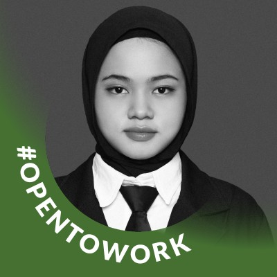

HR & Operational Professional
Profesional yang berfokus pada manajemen sumber daya manusia dan efektivitas operasional, didukung latar belakang Psikologi serta sertifikasi resmi **BNSP** sebagai **Supervisor Rekrutmen dan Seleksi SDM**. Ahli dalam mengelola ekosistem kerja hybrid, operasional rantai pasok nasional (Jawa, Sumatera, Sulawesi), hingga kepatuhan administrasi sektor publik.

Supervisor Rekrutmen dan Seleksi SDM
No Reg: M.1827.00219 2025
• Strategi Akuisisi Talenta: Merancang alur rekrutmen mulai dari identifikasi kebutuhan hingga seleksi kandidat efektif.
• Standarisasi Operasional SDM: Menjalankan fungsi manajerial SDM sesuai standar kompetensi resmi Indonesia.
• Kepatuhan & Profesionalisme: Menjamin kebijakan pengelolaan SDM dilakukan secara etis dan sesuai regulasi.
📧 indah.nuraini@email.com
📍 Yogyakarta / Sleman
📱 +62 895-2674-9846
PT Java Coir Indonesia (JCI)
"Mendukung koordinasi SDM dan efektivitas operasional di perusahaan trading komoditas ekspor dengan jaringan 7 pabrik di Jawa, Sumatera, dan Sulawesi."
PT Gemilang Multi Teknologi (GMT Innovation)
"Berfokus pada digitalisasi sistem administrasi dan pengelolaan tim hybrid (Remote & WFA) pada perusahaan inovasi teknologi pengembang software."
Badan Narkotika Nasional (BNN) Kabupaten Sleman
"Mendukung kelancaran operasional administratif instansi pemerintah melalui pengelolaan data personel dan tertib birokrasi."
Agu 2023 — Nov 2023
Memimpin desain inisiatif sosial berkelanjutan dan mobilisasi mitra komunitas.
Okt 2022 — Mar 2023
Mendukung kegiatan belajar mengajar dengan pendekatan empati tinggi.
Bachelor's Degree, Psychology | IPK: 3.77/4.00
Lulus Agustus 2025
Memperoleh landasan kuat dalam psikologi industri melalui penguasaan alat tes: EPPS, Binet, dan Rorschach untuk mendukung seleksi talenta yang akurat.
Terlatih dalam observasi perilaku, analisis data evaluasi, serta aktif dalam program psikoedukasi yang mengasah public speaking dan manajemen kelompok.